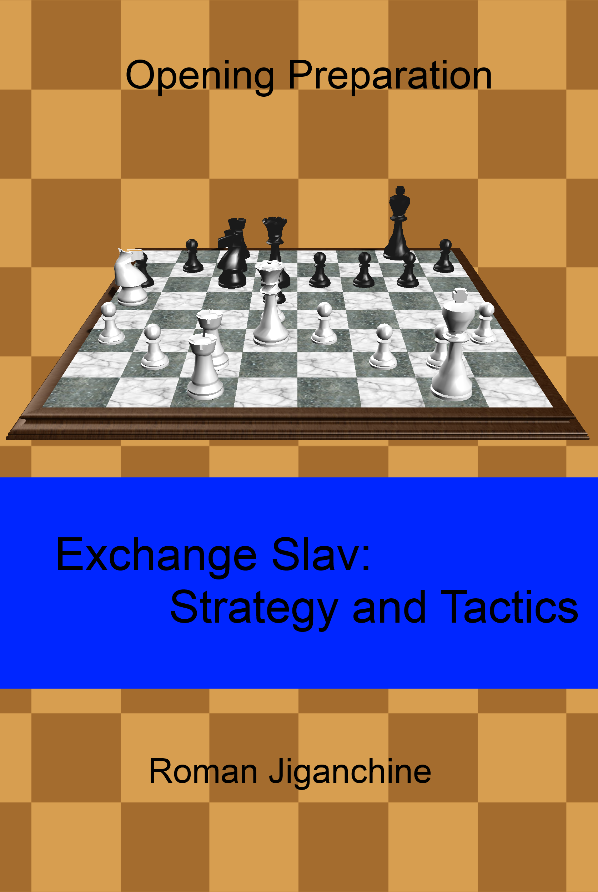

Exchange Slav - Strategy and Tactics
Created Thursday 07 December 2017
One of my early books - is about Exchange Slav.
Opening preparation in chess is always difficult and a lot of books have been written about this topic. The goal of this book is to illustrate how a specific structure should be studied for typical themes.
This book takes a specific opening variation (Exchange Slav) and through examples from grandmaster play, illustrates those themes. Any player who plays the Slav defence as Black, or who plays 1.d4 can benefit from learning the specific middlegame themes presented here. However, other players, who would like to learn the approach of connecting the middlegame with the opening in chess, can also learn a lot!
The format was specifically designed for e-readers. Most chapters have examples from practical games of chess champions of the past and present, such as Botvinnik, Kasparov, and Grischuk, followed by puzzles for the reader to solve. That should reinforce newly learned concepts and help get a better sense of the pawn structures discussed throughout the book. There are also questions for the reader to answer at the key moments of the games. To see solutions for puzzles and questions - just go to the next page. Instructive mistakes by lower rated players are also demonstrated throughout the chapters.
